Bleach
Shinigamis en Bleach
En Bleach, los Shinigamis o Soul Reapers son guerreros espirituales encargados de proteger el mundo humano, purificar hollows y mantener el equilibrio entre almas. Su existencia conecta directamente la vida, la muerte y el orden espiritual de toda la serie.
Volver a BleachGuia general
Los segadores que sostienen el equilibrio entre mundos
Los Shinigamis no son solo soldados con espadas. Son administradores del ciclo espiritual, guardianes del paso de las almas y fuerza militar de un sistema gigantesco que intenta evitar que el caos entre hollows, humanos y almas destruidas rompa el equilibrio del universo. En Bleach, casi toda la historia importante pasa por sus reglas, sus conflictos y sus traiciones.
Viven principalmente en la Soul Society, el gran mundo espiritual, y dentro de ella destaca el Seireitei, la ciudad amurallada donde se concentran las divisiones del Gotei 13, la academia y el corazon politico y militar del sistema.
- Purifican hollows con sus zanpakuto y envian almas al lugar correcto.
- Mantienen un orden militar con capitanes, tenientes y oficiales.
- Su poder depende de reiatsu, tecnica, experiencia y la evolucion de su espada.
Organizacion principal: Gotei 13
Estructura militar
El ejercito espiritual de la Sociedad de Almas
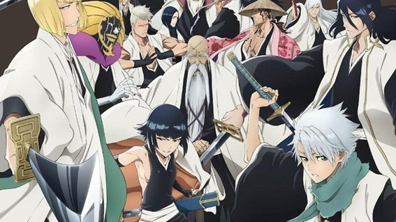
El Gotei 13 es el grupo de trece divisiones que actua como columna vertebral de los Shinigamis. Cada escuadron tiene un capitan, un teniente y varios oficiales, pero no todas las divisiones se parecen: algunas destacan por combate puro, otras por espionaje, investigacion, medicina o soporte tactico.
- El capitan es la maxima autoridad dentro de su division.
- El teniente suele ser la mano derecha y futuro relevo natural.
- La disciplina del Gotei 13 es una de las senas de identidad de Bleach.
Protagonista: el Shinigami sustituto
Figura central
Ichigo Kurosaki
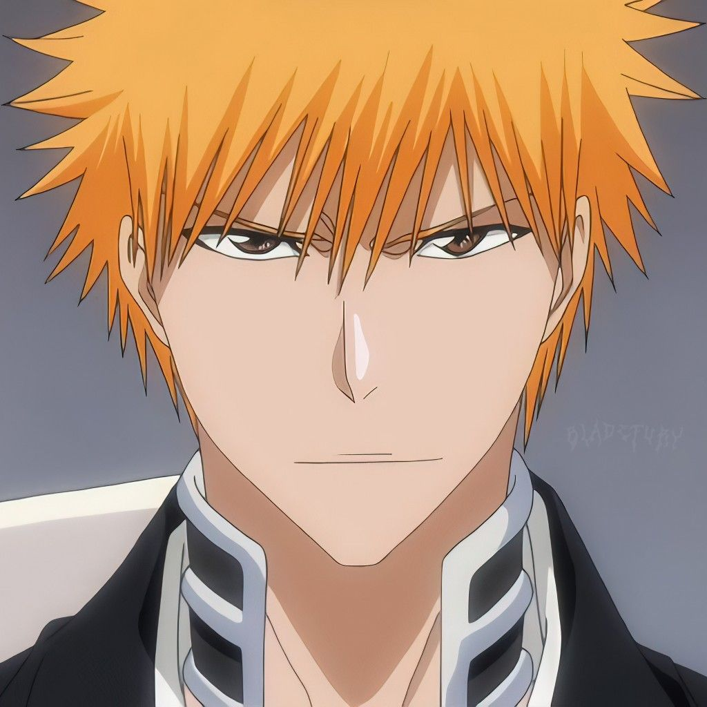
Ichigo arranca como un humano capaz de ver espiritus y termina convertido en el Shinigami sustituto mas anormal de toda la obra. Su papel no es solo pelear: sirve de puente entre el mundo humano, la Soul Society, los hollows y los quincy, y por eso casi cada gran conflicto de Bleach acaba pasando por el.
- De que va: recibe poderes de Rukia y entra de golpe en un sistema espiritual muchisimo mas grande de lo que imaginaba.
- Poderes: Zangetsu, Bankai Tensa Zangetsu, mascara hollow y una mezcla unica de naturaleza Shinigami, Hollow y Quincy.
- Importancia: es una anomalia total dentro del universo Bleach, capaz de romper reglas que para los demas personajes parecian fijas.
- Rasgo clave: su crecimiento siempre esta ligado a descubrir quien es realmente y de donde viene su poder.
Capitanes mas importantes del Gotei 13
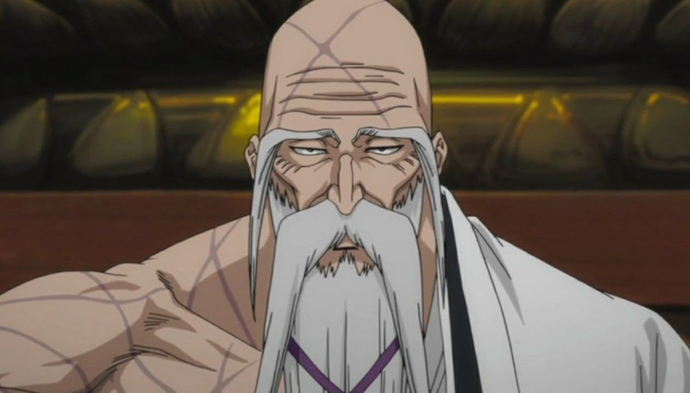
Genryusai Yamamoto
Capitan comandanteDe que va: fundador de la academia Shinigami y comandante historico del Gotei 13.
Poder: Ryujin Jakka, la zanpakuto de fuego mas temible, y un control devastador del calor espiritual.
Peso narrativo: representa la autoridad absoluta, la tradicion y la cara mas antigua y brutal de la Sociedad de Almas.
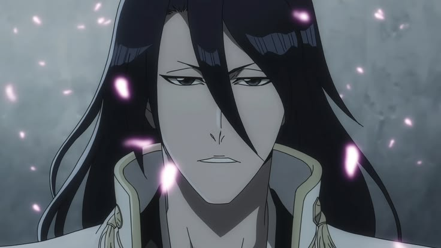
Byakuya Kuchiki
Nobleza y precision letalDe que va: noble del clan Kuchiki, disciplinado, elegante y uno de los capitanes mas iconicos de la serie.
Poder: Senbonzakura, una lluvia de hojas cortantes, y un Bankai de enorme alcance y precision.
Rasgo: su frialdad inicial esconde un personaje mucho mas complejo de lo que parece.
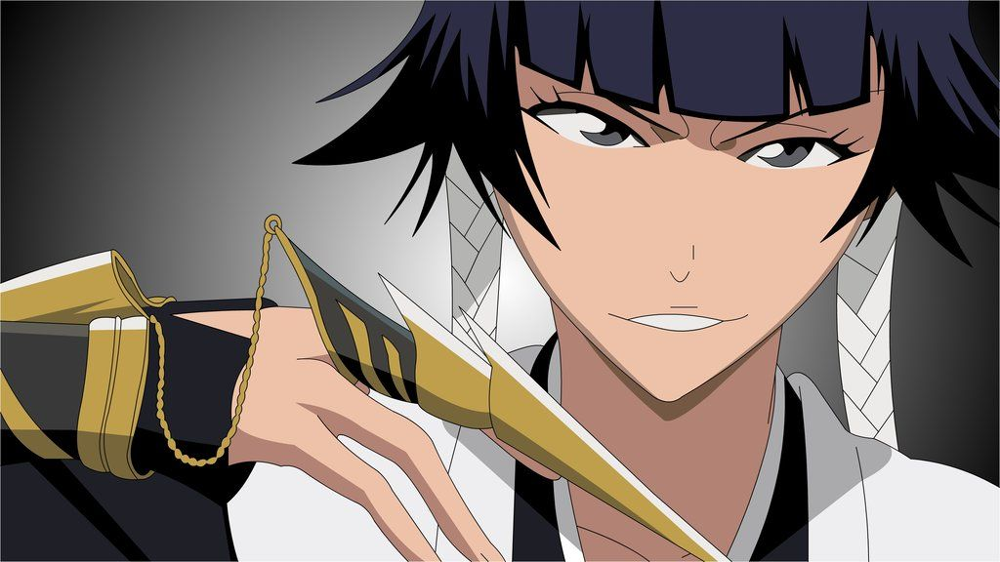
Soi Fon
Velocidad y asesinatoDe que va: lider de la Fuerza Secreta y capitan pensada para operaciones rapidas y letales.
Poder: golpes mortales en dos impactos, velocidad extrema y un Bankai sorprendentemente explosivo.
Rasgo: mezcla disciplina militar, orgullo y una personalidad mucho mas intensa de lo que aparenta.
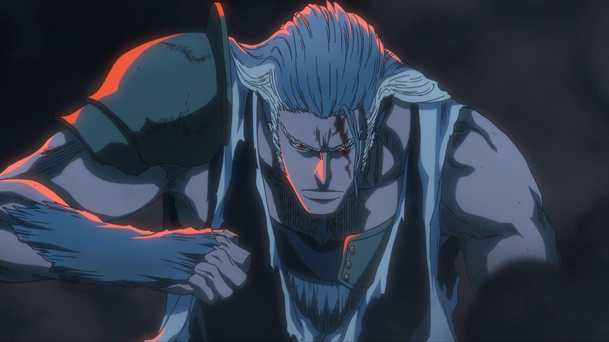
Sajin Komamura
Honor y fuerza brutaDe que va: capitan con apariencia bestial que representa la lealtad, el honor y la constancia.
Poder: Bankai gigante acorazado y golpes de fuerza absolutamente demoledora.
Rasgo: su diseno llama mucho la atencion, pero su verdadero peso esta en su sentido del deber.
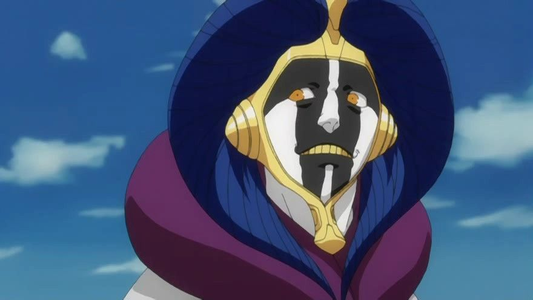
Mayuri Kurotsuchi
Ciencia, crueldad y experimentacionDe que va: el cientifico mas perturbador del Gotei 13 y uno de los personajes mas impredecibles de Bleach.
Poder: drogas, modificaciones biologicas, trampas y un Bankai que muta y se adapta.
Rasgo: su forma de pelear parece injusta porque convierte cada combate en un experimento vivo.
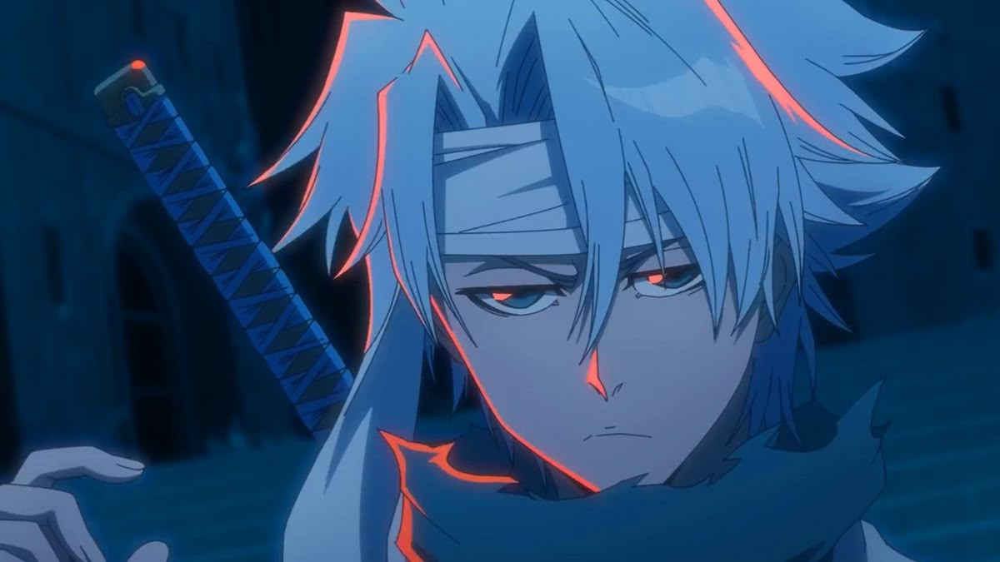
Toshiro Hitsugaya
Genio helado del Gotei 13De que va: el capitan mas joven y una de las promesas mas impresionantes de la Soul Society.
Poder: hielo absoluto, Hyorinmaru y un Bankai ligado a dragones de hielo y control meteorologico.
Rasgo: combina talento precoz con una madurez rara para su apariencia.
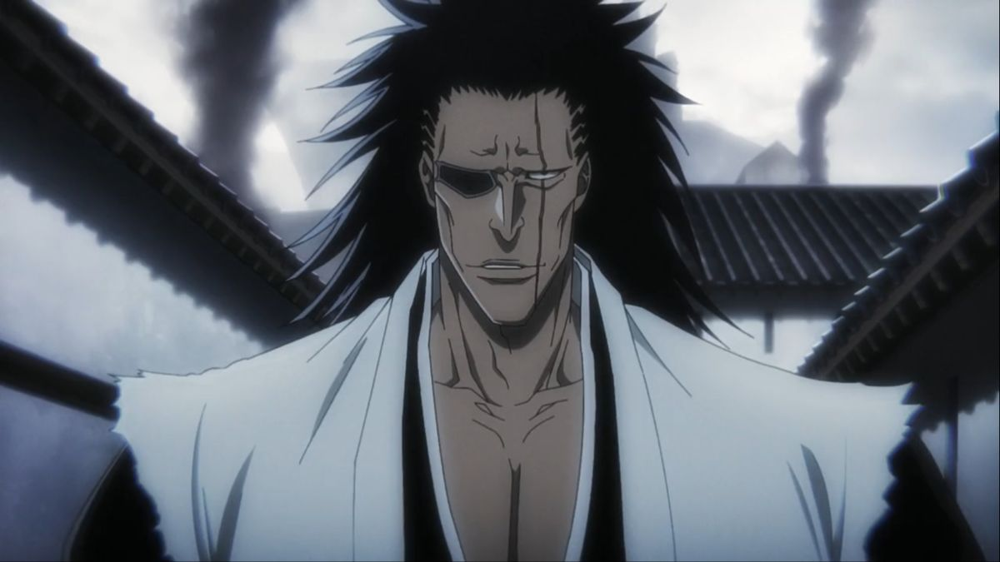
Kenpachi Zaraki
La batalla como forma de vidaDe que va: guerrero obsesionado con pelear contra rivales cada vez mas fuertes.
Poder: fuerza fisica monstruosa, resistencia brutal y un Bankai salvaje y desatado.
Rasgo: es el simbolo del combate puro, sin elegancia ni filtro, solo hambre de pelea.
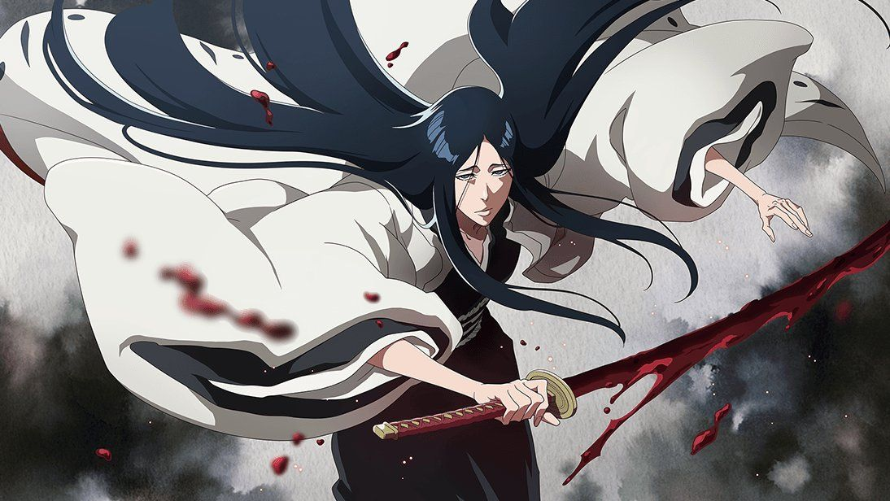
Retsu Unohana
La sanadora con pasado oscuroDe que va: durante mucho tiempo parece la capitan mas calmada y medica, pero esconde una historia temible.
Poder: maestria en curacion, kido, combate con espada y el legado de haber sido la primera Kenpachi.
Rasgo: uno de los giros mas impactantes del Gotei 13 sale directamente de su pasado.
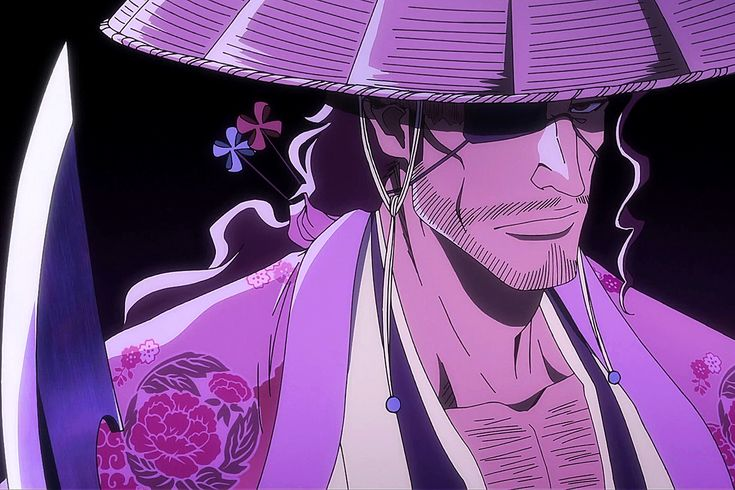
Shunsui Kyoraku
Calma, astucia y oscuridadDe que va: parece relajado y despreocupado, pero en realidad es uno de los capitanes mas peligrosos y lucidos.
Poder: Shikai y Bankai basados en juegos con reglas mortales y una lectura estrategica muy alta.
Rasgo: demuestra que en Bleach la apariencia mas tranquila a veces oculta a los monstruos mas serios.
Otros Shinigamis importantes
Aliada clave
Rukia Kuchiki
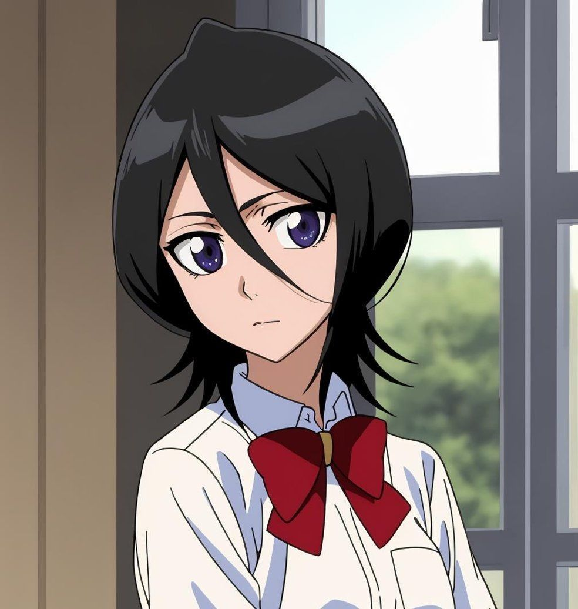
Rukia es la primera Shinigami que conecta de verdad el mundo humano con Ichigo. Le entrega sus poderes, desencadena el conflicto de la Soul Society y acaba convirtiendose en una de las figuras mas queridas y elegantes de toda la serie, con una zanpakuto de hielo refinada y peligrosisima.
Rival y aliado
Renji Abarai
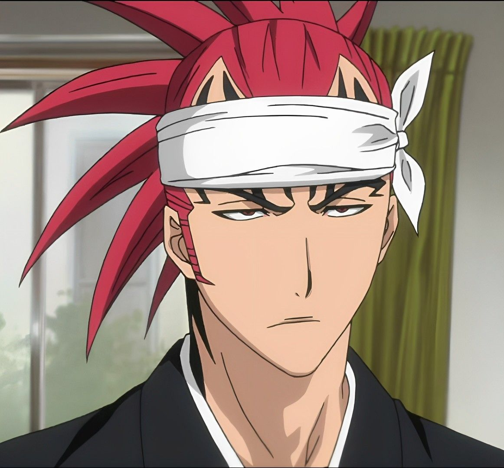
Renji empieza como rival directo de Ichigo, pero poco a poco se vuelve uno de sus grandes aliados. Su estilo agresivo, su personalidad impulsiva y su Bankai de tipo serpiente lo convierten en uno de los tenientes mas memorables del Gotei 13.
Lo que hace especiales a los Shinigamis
- Zanpakuto: cada espada tiene personalidad propia y refleja el alma de su usuario.
- Shikai y Bankai: la evolucion del arma representa el crecimiento real del personaje.
- Kido: hechizos espirituales que pueden servir para atacar, inmovilizar, defender o curar.
- Jerarquia: no son luchadores sueltos, sino parte de una maquinaria militar y politica enorme.
Resumen rapido
- Shinigamis = protectores del mundo espiritual y administradores del equilibrio de almas.
- Gotei 13 = ejercito principal de la Soul Society.
- Ichigo = Shinigami sustituto e hibrido mas raro y potente de la obra.
- Capitanes = elite absoluta, cada uno con estilo y filosofia de combate propios.
- Bankai = forma final y mas dificil de obtener dentro de una zanpakuto.
Curiosidades
- Cada zanpakuto tiene personalidad propia, por eso conocer su nombre importa tanto.
- El Bankai es raro y dificil de dominar, y suele marcar la diferencia entre un luchador bueno y uno legendario.
- Aizen fue uno de los traidores mas peligrosos del Gotei 13, cambiando para siempre la confianza interna del sistema.
- Muchos capitanes superan ampliamente el siglo de experiencia, algo que explica la diferencia brutal con los novatos.
- Ichigo no es un Shinigami normal, sino una mezcla irrepetible dentro del universo Bleach.